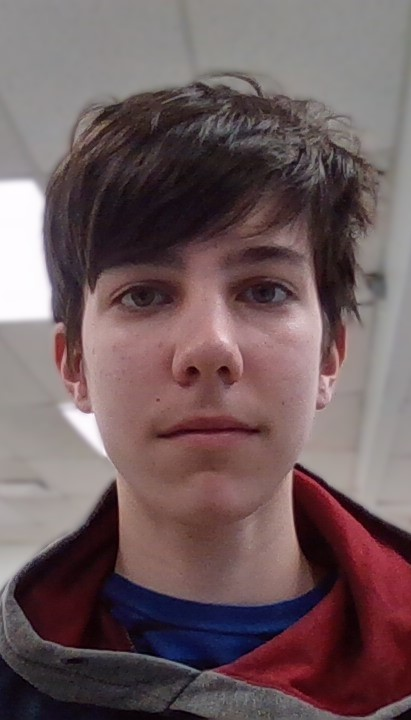

Hi, I'm Henri and I'm the guy who made this site.
(This is me)
I decided to make this site because I recently started making stuff with digital art and I needed a subject for my website project. So I did the most sensible thing and chose a topic I knew barely anything about and went from there. I hope you had fun using this site and that it helped.